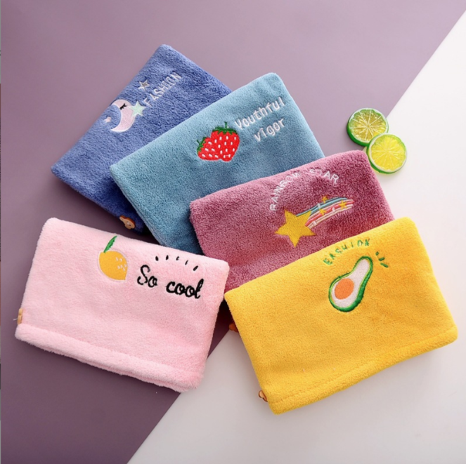

Prosop pentru Uscarea Părului din Microfibră
Prosop din microfibră, cu textură moale și absorbantă, pentru îndepărtarea delicată a excesului de apă din păr după spălare.
Prețul și stocul sunt afișate conform catalogului furnizat. Confirmă disponibilitatea, cantitatea și condițiile comerciale înainte de comandă.
DETALII PRODUS
Descriere
Prosopul pentru uscarea părului din microfibră este un accesoriu practic pentru îngrijirea zilnică a părului, conceput pentru absorbția excesului de apă după spălare. Datorită materialului textil fin și structurii sale absorbante, produsul reprezintă o alternativă la prosoapele tradiționale din bumbac, fiind potrivit pentru integrarea în rutina de îngrijire personală.
Microfibra combină capacitatea de absorbție cu o textură moale și o greutate redusă, facilitând utilizarea prosopului după duș, baie sau alte activități care presupun spălarea părului.
Produsul poate fi utilizat pentru diferite tipuri de păr, inclusiv drept, ondulat sau creț, oferind o modalitate simplă de îndepărtare a umidității fără frecarea intensă a firelor.
1. Absorbție eficientă a apei după spălare
Principalul avantaj al prosopului din microfibră este capacitatea materialului de a absorbi apa de pe suprafața firelor de păr, contribuind la reducerea umidității înainte de uscarea naturală sau utilizarea uscătorului electric.
Structura fibrelor permite reținerea apei în material, fără a necesita frecarea energică a părului.
Acest mod de utilizare poate contribui la o rutină de îngrijire mai delicată, în special în cazul părului umed, care necesită manipulare atentă.
Beneficii practice:
- Absoarbe excesul de apă rămas după spălarea părului.
- Poate reduce timpul necesar uscării ulterioare, în funcție de lungimea și densitatea părului.
- Permite tamponarea delicată a firelor.
- Reprezintă o alternativă la prosoapele voluminoase din bumbac.
- Poate fi integrat în rutina zilnică de îngrijire a părului.
2. Material din microfibră cu textură delicată
Microfibra este un material textil format din fibre sintetice foarte fine, apreciat pentru greutatea redusă și proprietățile absorbante.
Suprafața moale permite contactul delicat cu părul și scalpul, fiind potrivită pentru utilizare după spălare.
Spre deosebire de uscarea prin frecare repetată cu un prosop obișnuit, utilizarea prin tamponare ajută la limitarea solicitării mecanice asupra firelor.
Materialul flexibil facilitează manevrarea prosopului și adaptarea acestuia la diferite lungimi de păr.
În plus, microfibra se poate usca relativ repede după utilizare, în funcție de grosimea materialului și de condițiile de mediu.
3. Accesoriu potrivit pentru diferite tipuri de păr
Prosopul poate fi inclus în rutina de îngrijire a persoanelor cu păr scurt, mediu sau lung, în funcție de dimensiunile produsului.
Este potrivit pentru:
- Păr drept: pentru îndepărtarea excesului de apă după spălare.
- Păr ondulat: pentru tamponare delicată și reducerea frecării.
- Păr creț: pentru absorbția umidității fără manipularea excesivă a buclelor.
- Păr vopsit: ca accesoriu complementar unei rutine de îngrijire atentă.
- Păr lung: pentru absorbția apei înaintea uscării cu uscătorul.
- Păr fin: pentru tamponare fără mișcări agresive.
Rezultatele utilizării depind de caracteristicile părului, de gradul de umiditate și de modul de folosire.
4. Utilizare simplă în rutina zilnică
Prosopul este destinat utilizării după spălarea părului, atunci când este necesară îndepărtarea unei părți din umiditate.
Etape recomandate:
- După spălare, îndepărtați ușor excesul de apă din păr.
- Poziționați prosopul astfel încât să acopere zona dorită.
- Tamponați delicat părul, evitând frecarea puternică.
- Mențineți prosopul în contact cu părul pentru absorbția umidității.
- Continuați uscarea naturală sau utilizați un uscător de păr, după preferințe.
Materialul poate fi spălat și reutilizat, cu respectarea recomandărilor producătorului.
5. Utilizare acasă, în călătorii și în spații de îngrijire personală
Greutatea redusă și caracterul reutilizabil fac din prosopul din microfibră un accesoriu versatil, potrivit pentru mai multe contexte de utilizare.
Acasă
Poate fi utilizat după duș sau baie, ca parte a rutinei obișnuite de îngrijire.
În călătorii
Materialul flexibil permite plierea și depozitarea în bagaj, fără a ocupa un spațiu foarte mare.
La sală sau piscină
Poate fi folosit după spălarea părului, în vestiare și alte spații amenajate corespunzător.
În saloane de înfrumusețare
Poate reprezenta un accesoriu complementar pentru absorbția umidității după spălarea părului, cu respectarea cerințelor de igienă aplicabile.
6. Caracteristici și specificații ale produsului
- Tip produs: prosop pentru uscarea părului.
- Categorie: accesorii pentru îngrijirea părului.
- Material: microfibră.
- Funcție principală: absorbția excesului de apă din păr.
- Textură: moale și fină.
- Proprietăți: absorbție a umidității și flexibilitate.
- Design: textil, ușor de manevrat.
- Utilizare: după duș, baie sau spălarea părului.
- Tipuri de păr: drept, ondulat și creț.
- Lungimea părului: diferite lungimi, în funcție de dimensiunea prosopului.
- Destinație: îngrijire personală.
- Utilizare recomandată: acasă, în călătorii, la sală sau în spații de îngrijire.
- Caracter reutilizabil: conceput pentru utilizări repetate.
- Întreținere: spălare și uscare conform instrucțiunilor producătorului.
- Alimentare electrică: nu necesită.
- Dimensiuni: de confirmat conform specificațiilor furnizorului.
- Culoare: de confirmat în funcție de varianta comercializată.
- Conținut pachet: 1 prosop pentru uscarea părului, dacă furnizorul nu specifică altă configurație.
7. Avantaje pentru distribuitori și comercianți B2B
Prosopul pentru uscarea părului din microfibră poate completa oferta magazinelor de cosmetice, a distribuitorilor de accesorii pentru baie și a comercianților de produse pentru îngrijire personală.
Produsul se adresează unei categorii largi de consumatori, datorită utilizării sale simple și funcției practice în rutina zilnică.
Avantaje comerciale:
- Accesoriu pentru o activitate frecventă de îngrijire personală.
- Potrivit pentru comercializare în magazine fizice și online.
- Poate fi asociat cu șampoane, balsamuri și măști pentru păr.
- Format textil flexibil, practic pentru depozitare.
- Produs reutilizabil, fără componente electrice.
- Poate fi inclus în seturi cadou și pachete de îngrijire personală.
- Potrivit pentru oferta magazinelor de produse cosmetice, articole pentru baie și accesorii de frumusețe.
Prin funcționalitatea sa practică și utilizarea versatilă, prosopul din microfibră reprezintă un articol complementar pentru cataloagele B2B dedicate îngrijirii personale, putând fi comercializat individual sau alături de alte accesorii pentru păr.
8. Recomandări de întreținere
Pentru păstrarea proprietăților materialului, se recomandă spălarea prosopului conform instrucțiunilor producătorului și uscarea completă înainte de depozitare.
Se recomandă evitarea temperaturilor excesive și a produselor de curățare care pot afecta structura microfibrei.
Prosopul trebuie păstrat într-un spațiu curat și uscat, ferit de umezeală prelungită.
Dimensiunile, compoziția exactă a microfibrei, culoarea și eventualul sistem de fixare trebuie confirmate din specificațiile furnizorului înainte de publicarea produsului.
Comandă și informații
Site-ul funcționează în regim de catalog B2B. Nu există plată online sau coș de cumpărături.
Discută pe WhatsApp →DIN ACEEAȘI CATEGORIE